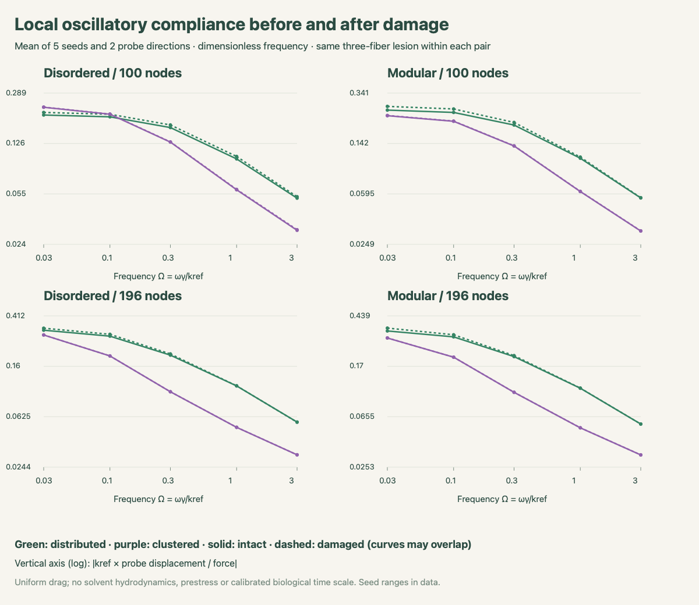
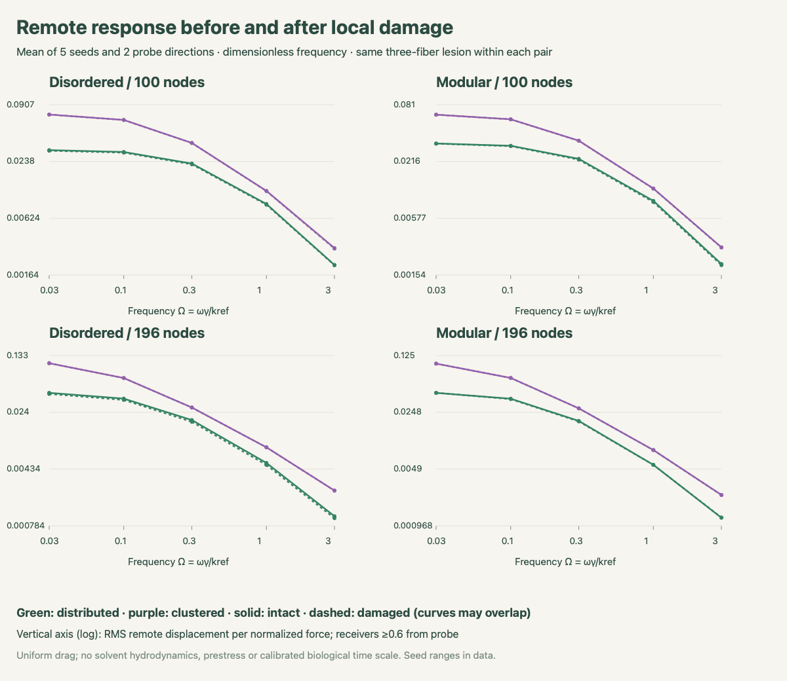
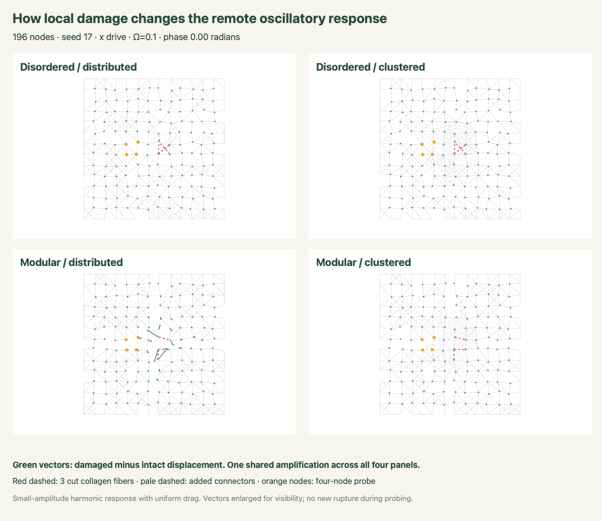

New: matched FEniCSx fluid-coupled comparison
40 specimens: 100 and 196 nodes, disordered and modular, distributed and clustered links, five seeds. Intact/damaged × x/y probe direction × six dimensionless frequencies gives 960 harmonic systems; 958 pass. Two static responses are flagged because one damaged modular specimen has a free zero-stiffness motion.
A four-node virtual probe drives the network at (0.35L,0.50L). The same three collagen fibers nearest (0.55L,0.50L) are cut in each placement pair. All outer nodes are clamped. Added-link count is 67 or 131, keeping count per node approximately fixed. The lesion is near the central cluster, so this does not test arbitrary damage sites.


| Architecture · nodes · links | Local compliance change | Remote RMS change |
|---|---|---|
| isotropic · 100 · distributed | +4.462% [+2.491%, +7.345%] | -1.706% [-6.255%, -0.096%] |
| isotropic · 100 · clustered | +0.289% [+0.129%, +0.530%] | -0.127% [-0.296%, -0.035%] |
| modular · 100 · distributed | +6.706% [+1.477%, +17.462%] | -0.793% [-2.092%, +1.418%] |
| modular · 100 · clustered | +0.348% [+0.122%, +0.616%] | -0.199% [-0.373%, -0.039%] |
| isotropic · 196 · distributed | +3.627% [+0.247%, +6.752%] | -4.018% [-12.472%, +0.208%] |
| isotropic · 196 · clustered | +0.043% [+0.031%, +0.069%] | -0.016% [-0.028%, -0.010%] |
| modular · 196 · distributed | +3.893% [+0.102%, +8.848%] | -1.204% [-4.663%, +0.634%] |
| modular · 196 · clustered | +0.056% [+0.019%, +0.074%] | -0.024% [-0.029%, -0.017%] |
Remote RMS uses free nodes at least 0.6 from the drive centroid (three reference mesh spacings). Receiver sets are identical within each intact/damaged pair and vary between sizes. Seed ranges are descriptive, not confidence intervals. Static exclusions do not affect the Ω=0.1 table.
Red dashed: cut fibers. Pale purple: added links. Orange: probe nodes. Gray vectors: intact; green: damaged, or damaged minus intact in the difference view. One fixed vector scale across panels within each view; changing magnification applies to all panels. End dots mark vector tips. Linear phasors are reconstructed at each phase; no new damage occurs during oscillation.
Download intact/damaged GIF · Download damage-induced-change GIF

For the selected central lesion, clustered links reduce the change in local and remote response relative to distributed links. This supports protection by constraints near this lesion, not a universal ranking of crosslink patterns or biological age. The two sizes remain different and do not establish boundary convergence or a long-range decay law.
The model assumes uniform nodal drag and a linear response about an unprestressed elastic state. There is no explicit solvent flow, rigid bead, optical trap, thermal noise or measured time scale. Ω is not hertz and these are not calibrated tissue storage/loss moduli. Probe amplitudes were checked against the nonlinear gradient at two small displacements.
Full methods and caveats · Paired response changes CSV · All responses, fields and checks · Validation · Summary values · Previous force/damage robustness study · WordPress post